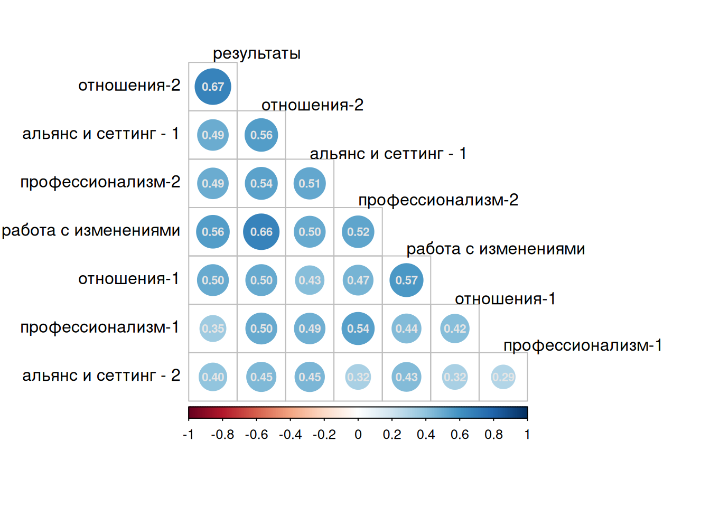
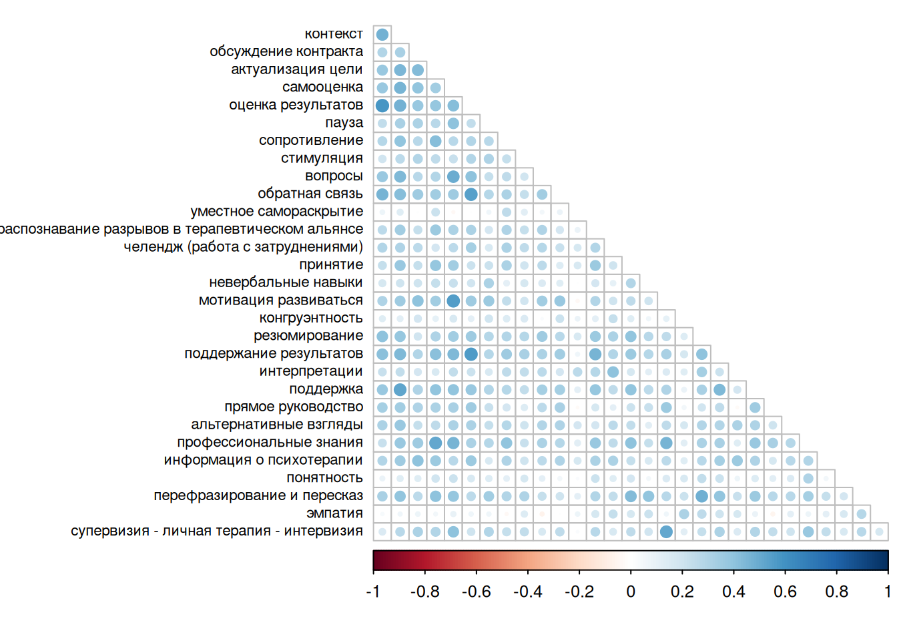

Descriptives
Вопросы по шкалам
В опроснике присутствуют не все вопросы из теоретической модели (137 из 250). Ниже дана таблица, по каким шкалам вопросы оказались частично или полностью исключены.| C2 | c2 | in_model | in_questionnaire | lost_questions |
|---|---|---|---|---|
| альянс и сеттинг - 1 | 2 | 18 | 9 | 9 |
| альянс и сеттинг - 2 | 3 | 18 | 5 | 13 |
| отношения-1 | 5 | 41 | 27 | 14 |
| отношения-2 | 6 | 21 | 17 | 4 |
| профессионализм-1 | 9 | 17 | 4 | 13 |
| профессионализм-2 | 10 | 18 | 18 | 0 |
| работа с изменениями | 8 | 46 | 40 | 6 |
| результаты | 11 | 17 | 17 | 0 |
| альянс и сеттинг - 3 | 4 | 17 | 0 | 17 |
| мета-компетенции | 1 | 10 | 0 | 10 |
| отношения-3 | 7 | 7 | 0 | 7 |
Вопросы по субшкалам
Аналогичная таблица, но уже по субшкалам.
| C2 | c2 | C3 | in_model | in_questionnaire | lost_questions |
|---|---|---|---|---|---|
| альянс и сеттинг - 1 | 2 | актуализация цели | 6 | 4 | 2 |
| альянс и сеттинг - 1 | 2 | обсуждение контракта | 6 | 5 | 1 |
| альянс и сеттинг - 2 | 3 | информация о психотерапии | 6 | 5 | 1 |
| отношения-1 | 5 | конгруэнтность | 5 | 3 | 2 |
| отношения-1 | 5 | невербальные навыки | 5 | 5 | 0 |
| отношения-1 | 5 | перефразирование и пересказ | 4 | 4 | 0 |
| отношения-1 | 5 | поддержка | 5 | 3 | 2 |
| отношения-1 | 5 | понятность | 5 | 2 | 3 |
| отношения-1 | 5 | принятие | 6 | 2 | 4 |
| отношения-1 | 5 | резюмирование | 5 | 4 | 1 |
| отношения-1 | 5 | эмпатия | 6 | 4 | 2 |
| отношения-2 | 6 | контекст | 5 | 5 | 0 |
| отношения-2 | 6 | обратная связь | 5 | 4 | 1 |
| отношения-2 | 6 | распознавание разрывов в терапевтическом альянсе | 6 | 3 | 3 |
| отношения-2 | 6 | сопротивление | 5 | 5 | 0 |
| профессионализм-1 | 9 | профессиональные знания | 6 | 4 | 2 |
| профессионализм-2 | 10 | мотивация развиваться | 6 | 6 | 0 |
| профессионализм-2 | 10 | самооценка | 6 | 6 | 0 |
| профессионализм-2 | 10 | супервизия - личная терапия - интервизия | 6 | 6 | 0 |
| работа с изменениями | 8 | альтернативные взгляды | 4 | 4 | 0 |
| работа с изменениями | 8 | вопросы | 5 | 5 | 0 |
| работа с изменениями | 8 | интерпретации | 5 | 5 | 0 |
| работа с изменениями | 8 | пауза | 6 | 5 | 1 |
| работа с изменениями | 8 | прямое руководство | 4 | 4 | 0 |
| работа с изменениями | 8 | стимуляция | 5 | 5 | 0 |
| работа с изменениями | 8 | уместное самораскрытие | 8 | 7 | 1 |
| работа с изменениями | 8 | челендж (работа с затруднениями) | 5 | 5 | 0 |
| результаты | 11 | оценка результатов | 6 | 6 | 0 |
| результаты | 11 | поддержание результатов | 6 | 6 | 0 |
| результаты | 11 | резюмирование сессии и результатов терапии c клиентом | 5 | 5 | 0 |
| альянс и сеттинг - 1 | 2 | концептуализация случая | 6 | 0 | 6 |
| альянс и сеттинг - 2 | 3 | план сессии и отчет | 5 | 0 | 5 |
| альянс и сеттинг - 2 | 3 | последовательность и фокус терапии | 7 | 0 | 7 |
| альянс и сеттинг - 3 | 4 | границы и правила | 5 | 0 | 5 |
| альянс и сеттинг - 3 | 4 | конфиденциальность | 6 | 0 | 6 |
| альянс и сеттинг - 3 | 4 | навыки тайм-менджмента | 6 | 0 | 6 |
| мета-компетенции | 1 | гибкость и адаптивность | 4 | 0 | 4 |
| мета-компетенции | 1 | саморегуляция | 6 | 0 | 6 |
| отношения-3 | 7 | мультикультурность | 7 | 0 | 7 |
| профессионализм-1 | 9 | знание границ своей компетентности | 6 | 0 | 6 |
| профессионализм-1 | 9 | межпрофессиональное сотрудничество | 5 | 0 | 5 |
| работа с изменениями | 8 | информация о психических процессах | 4 | 0 | 4 |
Стабильность ответов
Опросник достаточно длинный (137 вопросов по компетенциям, плюс несколько десятков по шкалам эмпатии и проч.). Так что есть вероятность, что респонденты в результате прохождения опросник устают и начинают выбирать какой-то один ответ. По настройкам гугл-формы видно, что переключатель Shuffle question order выключен, то есть респонденты видят вопросы ровно в той последовательности, как они заданы и поэтому гипотеза имеет место.
Однако, судя по графику, какого-то убывающего тренда в дисперсии (т.е. пользователи продолжают выбирать разные варианты ответов) нет.
Корреляция шкал
Каждую шкалу (компетенцию) я представил как сумму всех вопросов шкалы. Ниже дана сводная статистика, с каким количеством шкал есть значимая взаимосвязь и максимальное значение значимого коэффициента корреляции.
| row | n_sig_corrs | r_max | r_min |
|---|---|---|---|
| альянс и сеттинг - 1 | 7 | 0.555 | 0.426 |
| альянс и сеттинг - 2 | 7 | 0.452 | 0.291 |
| отношения-1 | 7 | 0.570 | 0.323 |
| отношения-2 | 7 | 0.666 | 0.446 |
| профессионализм-1 | 7 | 0.541 | 0.291 |
| профессионализм-2 | 7 | 0.541 | 0.324 |
| работа с изменениями | 7 | 0.662 | 0.434 |
| результаты | 7 | 0.666 | 0.352 |

Корреляция субшкал
Аналогично, корреляция субшкал. Видно, что достаточно мало сильно скоррелированых шкал, некоторые субшкалы если и значимо взаимосвязаны с какими-то другими, то все равно связь очень слабая (например, уместное самораскрытие, эмпатия, понятность).
| row | n_sig_corrs | r_max | r_min |
|---|---|---|---|
| оценка результатов | 27 | 0.587 | 0.118 |
| резюмирование сессии и результатов терапии c клиентом | 27 | 0.587 | 0.088 |
| поддержание результатов | 28 | 0.565 | 0.180 |
| мотивация развиваться | 27 | 0.554 | 0.107 |
| самооценка | 28 | 0.554 | 0.099 |
| обратная связь | 26 | 0.542 | 0.138 |
| актуализация цели | 28 | 0.520 | 0.107 |
| контекст | 28 | 0.520 | 0.122 |
| поддержка | 29 | 0.520 | 0.086 |
| профессиональные знания | 28 | 0.520 | 0.125 |
| супервизия - личная терапия - интервизия | 28 | 0.517 | 0.129 |
| вопросы | 26 | 0.491 | 0.113 |
| перефразирование и пересказ | 29 | 0.487 | 0.118 |
| резюмирование | 29 | 0.487 | 0.140 |
| распознавание разрывов в терапевтическом альянсе | 29 | 0.469 | 0.089 |
| обсуждение контракта | 27 | 0.440 | 0.135 |
| принятие | 29 | 0.434 | 0.133 |
| сопротивление | 28 | 0.429 | 0.115 |
| интерпретации | 27 | 0.407 | 0.122 |
| челендж (работа с затруднениями) | 29 | 0.407 | 0.108 |
| пауза | 27 | 0.405 | 0.145 |
| информация о психотерапии | 28 | 0.404 | 0.118 |
| невербальные навыки | 26 | 0.398 | 0.108 |
| альтернативные взгляды | 29 | 0.379 | 0.120 |
| прямое руководство | 25 | 0.366 | 0.111 |
| стимуляция | 29 | 0.323 | 0.127 |
| конгруэнтность | 25 | 0.310 | 0.086 |
| эмпатия | 16 | 0.310 | 0.086 |
| понятность | 24 | 0.309 | 0.088 |
| уместное самораскрытие | 14 | 0.261 | 0.089 |

Размеры шкал
В модели на уровне компетенций (с2-шкал) шкалы не сбалансированы по количеству вопросов. Эта неравномерность вызвана тем, что от исходной модели опросника на 230 вопросов в количественном исследовании было использовано всего 137 вопросов. Остальные вопросы (и, соответственно, (суб)шкалы), было решено оценивать качественными методами.
В результате в некоторых шкалах всего 3 вопроса, а в некоторых — до 27:
| c2 | C1 | C2 | full_model | trimmed_model | excluded |
|---|---|---|---|---|---|
| c2 | процесс терапии | альянс и сеттинг - 1 | 9 | 8 | 1 |
| c3 | процесс терапии | альянс и сеттинг - 2 | 5 | 5 | 0 |
| c5 | отношения | отношения-1 | 27 | 21 | 6 |
| c6 | отношения | отношения-2 | 17 | 12 | 5 |
| c8 | работа с изменениями | работа с изменениями | 40 | 21 | 19 |
| c9 | профессионализм | профессионализм-1 | 4 | 3 | 1 |
| c10 | профессионализм | профессионализм-2 | 18 | 18 | 0 |
| c11 | результаты | результаты | 17 | 17 | 0 |